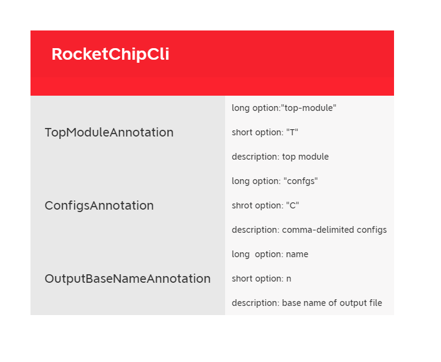

[TOC]
该命令主要是拷贝编译所所需要的文件到目标文件夹，调用的是generators\utilities\src\main\scala\Simulator.scala中的GenerateSimFiles函数，该函数混入了HasGenerateSimConfig特质，该特质决定传入的传输选项。
sim/simulator
通过模式匹配决定使用仿真的软件是vcs还是simulator
td/target-dir
需要拷贝到的目标文件夹
df/dotFName
生成的dot-f文件的名称
参数的使用的是scala中的scopt.OptionParser对象进行判断调用，同时也通过该对象的parser成员函数判断是否参数匹配，对匹配的参数进行下一步操作，即调用GenerateSimFiles对象的内部关系
writeFiles函数，此函数为该类中的入口函数，其他的函数都通过该函数进行初始的调度。boorrom文件夹，并拷贝一些img文件到该文件夹resources中需要的依赖文件拷贝到目标文件夹writeDotF函数保存成dot-f文件
命令中的GENERATOR_PACKAGE变量很多都是为chipyard，所以我主要关注了该package下的generator函数。该函数主要作用是设置FIRRTL的一些编译选项，控制编译的时候的一些行为，所在目录为generators\chipyard\src\main\scala\Generator.scala，通过StageMain对象传入一个ChipyardStage对象，我主要关注了ChipyardStage中的一些编译选项，而在StageMain中则主要是一些FIRRTL的状态转换以及行为控制、消息传递，没有仔细去进行分析。
在ChipyardStage中主要有两个比较重要的成员，一个是Shell成员另外一个是target成员，其中Sell成员主要是控制编译器的行为，而target成员主要调用FIRRTL中的Depedency对象，目的是找到一些依赖的库与生成编译过程中的log。
shell
该成员通过混入了ChipyardCli, RocketChipCli , ChiselCli , FirrtlCli四个特质来接守输入的参数，同时控制编译器的行为。
ChipyardCli
该特质接收chipyard的生成选项，接收参数为legacy-configs，接受一串以下划线界定的参数，参数的优先级从右到左递减。参数切分处理之后还会进一步调用ConfigsAnnotation生成FIRRTL接收的Annotation类，在接下来的篇幅中会进一步介绍，该特质的思维导图如下所示。

RocketChipCli
该特质是RocketChip的编译选项，其中有三个类来处理该编译的参数，分别为TopModuleAnnotation , OutputBaseNameAnnotation, ConfigsAnnotation,
TopModuleAnnotation
接收参数top-module/T，将输入的顶层模块参数转化为Annotation传递给FIRRTL
ConfigsAnnotation
接收参数configs/c，配置参数以句点字符串进行配置，切分之后以Annotation的形式传递给FIRRTL
OutputBaseNameAnnotation
接收参数name/n，设置基础的输出文件名

ChiselCli
该特质是chisel的编译选项，选择是否使用FIRRTL，跟踪打印在transform过程中发生异常的信息，chisel生成Annotaion的选项等，他通过三个类来实现上述的目标，分别为NoRunFirrtlCompilerAnnotation, PrintFullStackTraceAnnotation, ChiselGeneratorAnnotation。
NoRunFirrtlCompilerAnnotation
接收参数no-run-firrtl/chnrf，使用了该选项就不使用FIRRTL进行编译，直接由chisel得到硬件电路。
PrintFullStackTraceAnnotation
接收参数full-stacktrace，即当发生异常的时候，将会以栈的形式全打印出来
ChiselGeneratorAnnotation
接收参数module，通过给出类的名字跟路径搭一个chisel module，且不能带参数，要是找不到将会抛出异常。

FirrtlCli
该特质是FIRRTL编译器的编译选项，主要通过FirrtlFileAnnotation, OutputFileAnnotation, InfoModeAnnotation, FirrtlSourceAnnotation, CompilerAnnotation, RunFirrtlTransformAnnotation, EmitCircuitAnnotation, EmitAllModulesAnnotation, NoCircuitDedupAnnotation，这些特质实现对编译选项的识别与对应函数的执行

该函数也是FIRRTL的一些编译选项，但与上面不同的是，此处控制的主要是编译成的目标代码的电路结构，上面主要是FIRRTL编译器编译之前的一些选项，如输入输出文件啦，中间过程如何转化等。
同时生成了很多
同时他不直接在GenerateTopAndHarness中处理信息，这只是一个接口，他通过继承GenerateTopAndHarnessApp，然后调用GenerateTopAndHarnessApp中相应的执行函数进行。
该函数主要通过继承HasFirrtlOptions与HasTapeoutOptions来处理参数选项。
其中HasTapeoutOptions主要是用来控制生成RTL的代码结构的特质，而HasFirrtlOptions我个人觉得还是关于FIRRTL中参数传递，中间转换的一些编译控制选项，与之前的有一部分是重叠。
解释中主要分为两个阶段，第一个阶段是收集在synTop之下的模块，第二阶段是删除所有的module然后生成测试工具。
具体的编译选项跟描述如下表所示。

这个函数比较复杂，调用了两次，大概是生成不同层次的memory，接下来还需要配合文档在仔细阅读，两次调用此一次大概是生成TOP_SMEMS，第二次生成的是HARNESS_SMEMS，具体如何生成的我先不去理解，这里先列举他的参数配置相关的内容，具体如下表所示。

总结这只是单纯的看了common.mk得到的相应的部分编译配置，在全局搜索看那些模块调用了common.mk发现，其实很多都是独立的模块，包括在前面文档中编译过的VCS或者Verilator其实都有调用，其实都调用了common.mk，但是肯定不止是这几个文件就可以生成对应的仿真工具的。还有就是一些编译选项具体所指有点不明白，需要进一步去看文档，比如所在MacroCompiler中的HARNESS_SMEMS这个选项具体到底是想要生成的那一部分的menory需要具体再去细看。
todo接下来还需要去看下文档，包括他的具体的设计结构，也就是相关的设计的层次结构，然后再回来看这个编译文档可能会得到更多的新搜获